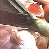
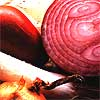
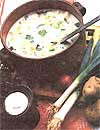

KITCHEN GARDEN
Pungent kings of the culinary world.
How dull many of our meals would be without onions, leeks, shallots, chives and garlic! These edible alliums-members of the Liliaceae, or tile family-pep up meat, and poultry, lend a crispy crunch to salads, give soul to soups, are essential to stir-fries and can be creamed, fried, baked or pickled standalone dishes. Besides being tasty and low in calories, onions are healthful, too. The vegetables antiseptic quality makes it a valuable poultice for infections; onion juice sweetened with honey is good for cough and colds; and the fresh vegetable acts as a diuretic, improves low blood pressure and helps control vertigo. Additionally, when cultivated, harvested and stored properly, garden-grown alliums can be enjoyed year-round.
Fortunately, humans have seldom been without these verstile plants. Members of the onion family have flourished in cultivation so long that their origins are uncertain. Some think they were first grown in Mongolia; others opt for Asia Minor. Onions are mentioned in the Old Testament and were in the diets of those who built the Egyptian pyramids. Alliums helped sustain the ancient Greeks, and garlic was considered essential for empire-building Roman soldiers. On this continent, wild onions flavored the meals of American Indians for centuries before Europeans arrived. Happily, alliums are easy to grow-some easier than others. In fact, one member or another of the onion family will survive in almost any soil or climate, but different varieties do have specific requirements, so let's look at them separately.
Onions (Allium cepa)
Onions come in all shapes and sizes: round (including globe types, small pear or pickling onions and the large Spanish varieties); flat, flat-wide, flat-round and half-flat (the mild-flavored Bermuda onions); top-shaped or pear-shaped onions (Grano types); and the high-yield, spindle-shaped Red Torpedo, grown chiefly in Califor nia. Many also come in red, yellow or white versions, and new varieties are developed all the time. While most onions can be utilized as scallions when they're young, perennial bunching types ( Allium perutile and Allium fisulosum ) produce superior scallions and are also practically immune to pests and diseases. Another perennial- Allium cepa solanium , known as a multiplier or potato onion-is propagated by a division of underground bulbs, with each bulb multiplying into a bulb cluster. And we mustn't overlook the remarkable Egyptian onion ( Allium cepa vivaparum ), which produces a bulb cluster at the end of a long stem with a second cluster frequently forming on top of the first. Egyptian onions also have underground bulbs, but these are so strong that usually only the aboveground bulbs are used.
LEEK AND POTATO SOUP
FOOD STYLING BY SUSAN ERDMANN
4 medium potatoes, peeled and diced
2 cups cold water
4 large leeks, sliced, including some
fine-sliced green tops
1 large onion, chopped
2 tablespoons margarine or vegetable oil
3 cups milk
Dash of cayenne pepper
Salt and pepper to taste 2 tablespoons fresh minced parsley
1 cup cream
Cook potatoes in water about 10 minutes.
Saute leeks and onion in oil until golden.
Add to potatoes and stir in milk and seasonings.
Simmer until the flavors are blended (about 15 minutes). Add parsley and heat almost to boiling, stirring frequently. Enrich soup with cream and serve hot.
Onion Varieties Your choice of allium variety will be determined by climate and by whether you prefer seeds, transplants or sets.
For example, you should always check a cultivar's daylength requirement. Long-day varieties need the 13 to 16 hours of daylight of Northern summers to mature. Short-day types (such as Bermuda and Sweet Spanish) thrive in milder climates with only 12 hours of daylight.
Seeds provide the greatest choice, but onions grown from seed often take five months to mature, and the plants they produce can be susceptible to diseases. Transplants, sold in bunches, are seedlings started in the current growing season. They usually form good bulbs. Sets, immature bulbs from the previous year, are the easiest to plant, the earliest to harvest and the least susceptible to diseases. Unfortunately, only a few varieties are available in this form, and not all will yield good bulbs. (Look for small-bulbed sets, as large ones may go to seed before producing a good-sized onion.) For the Middle or Northern sections of the country, try sets of Ebenezer (early yellow) and Stuttgarter (yellow, nonsprouting).
In the South, pick a firm, sweet, mild Granex type. (The famous Sweet Vidalia, grown in two Georgia counties, is yet another Granex. The Walla Walla Sweet is equally prized in the West.) Sweet Spanish types, such as Fiesta, generally taste better than yellows and store fairly well. Bermudas are slicing favorites but aren't good keepers. Good white storage onions include White Ebenezer in the North and Granex White in the South. Red onions are normally very pungent-and, as a general rule, the stronger-flavored onions keep best of all. When planting bunching onions, you can't go wrong with the crisp flesh and mild flavor of White Lisbon. Its dark green foliage is resistant to heat and cold, and it stays fresh long after being pulled. Once planted, winterhardy He-Shi-Ko-a perennial with white, pungent flesh-will add flavor to meals for years, while Wonder of Pompeii's small, round, early bulbs are great for pickling.
Onion Cultivation
The onion bed should be moist but well drained with a pH of 6 to 7. Sandy loam is ideal, but onions thrive in most any soil if large quantities of well-aged manure, wood ashes and bone meal in a 5:1:1 ratio are worked in to a depth of six inches. This vegetable likes cool weather (55° to 75°F) in its early stages. Therefore, plant seeds in the spring in the North and (depending on the variety) in the fall or winter in the South. Generally speaking, frost-hardy onions can be sown four to six weeks before the last frost date-or even earlier indoors or in a cold frame. (Mix in some quick-sprouting radish seeds to mark the onion bed and to lure any root maggots that might be lurking in the soil away from your allium crop.) Sow the seeds thickly about one-half inch deep.
Thin young sprouts to one inch apart. (When they're started under glass, transplant to the garden when two to three inches tall.) Thin again a month later to two or three inches apart, enjoying the tender rejects in salads and other dishes. At the same time, dig the soil back to expose the tops and sides of the bulbs to help stimulate bulb formation. Position plants or sets two inches deep and four to six inches apart, depending on whether you plan to harvest some as scallions. If planting in rows instead of raised beds, make the rows about two and a half feet apart. Keep well weeded, but-because onions have shallow roots-cut, don't pull, any wild intruders. Once the soil has warmed up, add a thick layer of mulch around and between the onions to discourage weeds and to hold moisture in the soil. (Transplants require more water than do sets.)
Onion Enemies
Onions are mostly disease- and insectresistant, but keep an eye out for root maggots (small, white larvae that usually enter the base of the bulbs and burrow upwards to feed on the stems) and onion thrips (barely visible larvae that cause bleached, deformed plants with silvery blotches). There are, however, preventive measures that can be used to deter both pests. Root maggots; for example, travel in a line from one bulb to the next, so their threat will be reduced if you scatter-plant onions throughout the garden. (Keep in mind that alliums are good companion plants to roses, lettuce, carrots, beets, parsnips and members of the cabbage family, repelling such pests as aphids, Japanese beetles and carrot flies.) As mentioned, maggots can also be lured to radishes, which can be pulled up and destroyed if infested. Also add a thin layer of wood ashes or sand around the bulbs to discourage adult flies from laying their eggs at the base of the plants.
Use rotenone if all else fails. Thrips overwinter in weeds, so keep your onion patch clean. If that doesn't work, try an oil-and-water or tobacco spray, rotenone or pyrethrum. A cheesecloth cover placed over your crop during May and June will protect it from the lesser bulb fly, which enters through the top of the onion bulb. Garlic-and-water sprays also discourage this pest, along with the garden springtail, a tiny purple insect with yellow spots. Onion ailments are confined to smut (black leaves and pustule patches between bulbs), downy mildew (a purplish mold) and selfdescriptive pink root and neck rot-all of which are caused by fungi in the soil. Avoid these infections by practicing crop rotation, providing good drainage and working a lot of humus into the onion bed.
The Onion Harvest When onion tops turn yellow, bend them over horizontally with the back of a rake to stop the sap from flowing and divert growing energy into the maturing bulb. Once the tops turn brown, wait for a sunny period to pull or dig the crop, and dry the bulbs on the ground for a few days. (To prevent sunscald, "shingle" the onions by letting the tops of one row cover the bulbs of another.) When the outer skins are thoroughly dry, wipe off the dirt and dried roots, remove the tops (unless you plan to braid them), and store your harvest in a cool, dry, flat place. Hang braided onions or those kept in mesh bags in an airy spot.
With the exception of green onions, which won't keep long even when refrigerated, mature bulbs can last indefinitely. Therefore, onions aren't usually canned or frozen. Pickled onions, however, are a delightful treat. Just cover 10 pounds of small bulbs with boiling water and let them stand for 2 minutes, drain, dip into cold water, drain again, and peel. Soak overnight in lightly salted water. Then combine 3 cups of white vinegar, 3 cups of water, 1 1/2 cups of sugar, 2 cloves of garlic, 2 bay leaves, 2 cinnamon sticks and 5 whole cloves in a large pot and bring the mixture to a boil. Add the drained onions and bring to a boil again. Pack into sterilized jars and cover with the boiling liquid, leaving 1/4 inch headspace. Adjust lids and process in a boiling-water bath for 10 minutes. Makes 10 pints.
Garlic ( Allium sativum )
This perennial is highly adaptable to most parts of the country, has similar soil requirements to those of onions and likes cool temperatures during its early growth. It also needs plenty of sun. If you want to grow garlic from seed, California White is popular; Giant Cajun Garlic offers extra-large, mild bulbs; Mexican Garlic is pungent and hardy; and elephant garlic-Allium scorodoprasum-produces one-pound, milder than-average bulbs. Most people, however, use the cloves of store-bought white garlic bulbs. These can be planted about eight weeks before the last frost or in the fall if mulched heavily where winters are severe.
Separate each segment gently (the larger cloves usually produce the largest bulbs) and place them, plump side down, one to two inches deep and four to six inches apart. Rows should be at least one foot apart, but you'll probably want to scatter garlic throughout the garden for its insect repelling properties. Don't, however, plant it near your peas or beans, as legumes don't care for garlic companions. Once in the ground, garlic will care for itself if you keep weeds down and don't let the soil dry out.
To produce larger bulbs, remove the flowers that appear on the leaf stalks. Watch for signs of onion thrips, root maggots and downy mildew, though such problems are unusual. When garlic tops are about one foot tall, stop watering. Once the tops begin to droop, knock down the foliage to speed up the curing process and-a few days later-loosen the soil and pull out the entire plant. Dry in a cool location with low humidity to keep the bulbs from molding. Remove the tops and store like onions. The bulbs will last for several months-or up to a year if wrapped and refrigerated. Use generously in recipes, for garlic contains vitamins C and B, phosphorus, calcium and potassium, as well as allicin, a chemical with antibiotic properties that can minimize the effects of colds, aid the digestive tract, ward off traveler's dysentery, help control high blood pressure and reduce the risk of heart attacks and arteriosclerosis. Garlic sprays repel insects and can deter dis eases such as downy mildew, cucumber and bean rust, bean anthracnose and early tomato blight.
Shallots ( Allium ascalonicum ) It's surprising that grocery-store shallots are so expensive, because the plants are very easy to grow. Extremely adaptable to practically any soil or climate, this allium is beautiful, with its graceful, bright blue-green stem, and its gray, angular, mild-flavored bulb (related to the multiplying onion) is a favorite of French chefs. (A young scallion is eaten whole, while the mature bulb is used like a milder, superior-flavored garlic.) As with garlic, it's best to make your shallot sets by dividing bulb clusters purchased from a store's produce section. (The only true shallot seeds available are the Louisiana variety.) Each shallot will multiply and produce four to eight new bulbs.
Shallots aren't particular about soil, disliking only very acid spots, but the earth must be well dug, because the plants send feeder roots down to a depth of eight inches. However, they have no lateral roots, so the cloves can be planted close together. Plant them about one inch deep (barely cover the tip of the clove) and two to three inches apart in February or March. Light feeders, shallots like a little phosphorus but don't require rich soil. They can also survive dry spells, but-for the best growth-keep the soil weedfree and slightly moist. Around June, draw the soil away from the bulbs. Though growth stops with freezing temperatures, shallots are very hardy and also will tolerate both low and intense light conditions, flourishing best when temperatures are in the mid-70s and daylight hours are long. Shallots can be harvested as green onions at any time, and if the tops are cut off near the soil, they'll produce new ones.
In fact, cutting the tops and using them as you would chives will promote bulb production. Bulbs mature in about five months. At that time, pull them up, cut off the tops, dry, and store them in a cool place-saving the healthiest looking bulbs for next year's crop.
Chives ( Allium schoenoprasum ) The early-spring, grass like chive has been enjoyed for centuries in Britain and Europe and for thousands of years in China. Though fairly tolerant of most soils and locations, it rewards the gardener who gives it a humusrich, moisture-holding home with superior flavor and succulence. (Poor soil can even cause chive tips to yellow.) The germination of spring-sown seeds will be slow, and the first year is likely to be unproductive. Impatient gardeners should set out chive clumps, which will be ready to harvest two months later. Each clump should contain about six bulbs, and the clusters should be spaced eight inches apart. Every third year, dig up, divide, and replant in another section of the garden. Chives are not evergreen and will die back, so-before the first frost-put a few clumps in pots, cut back the leaves to about two inches, and bring them indoors for use in winter dishes. Whether indoors or out, constant cutting is necessary to keep up an ongoing supply of leaves. Flowers, though attractive, also should be cut of.
Leeks ( Allium porrum )
Switzerland, Algeria and the Eastern Mediterranean all claim to be the original home of the leek-and, indeed, any place would be proud to claim this wonderful allium. It's very easy to grow, is resistant to pests and diseases and can be harvested fresh from many gardens throughout the winter so make sure to plant a large crop, because this is the sweetest and most delicate-flavored of all the onions. Though not very popular in this country, leeks have been prized in ancient civilizations for three or four thousand years.
Leeks thrive in temperate climates (growth will slow above 90°F) and will withstand temperatures several degrees below freezing. Though they prefer crumbly, rich loam, such as woodland humus, they will do well in most soils if well-rotted manure or good compost is worked in deeply. However, they require a lot of moisture and dislike weeds.
Depending on the variety, leeks take from 70 to 110 days to mature but can be harvested as green onions some three weeks earlier. Their flavor is best, however, after the first frost. To get a head start, sow seeds indoors in flats two to three months before setting them out. At three inches, thin the seedlings to one inch apart; when five inches tall, thin to two inches apart. At about eight inches, transplant to the garden, placing seedlings in six-inch deep holes spaced six inches apart, and fill the hole with water to anchor the roots. When the plants are pencilsize, carefully bank up the soil around the lower two or three inches to blanch the leek, to improve both its appearance and its delicate flavor.
And how you'll love that flavor! Where temperatures seldom fall below 10°F, just pull leeks from the garden throughout the winter. In colder climates, ball them up and keep them in a box in a cool, dry place. Use them in any recipe that will be enhanced by a delicate onion flavor.(The long, white stem is most commonly eaten, though the sharper tasting green tops are good, too.) Serve them in wilted-spinach salad. (Saute chopped leeks and garlic in a little bacon grease, stir in spinach leaves until wilted, and serve topped with crumbled bacon.) If young and tender, leeks can be creamed and used as an excellent topping for toast. (Saute in butter, simmer, and add a cream sauce.)
|
 |
 |
 |